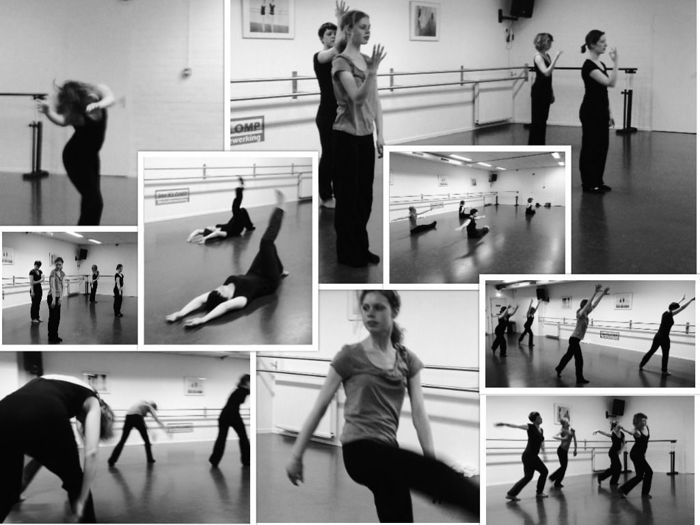

Moderne dans

Moderne dans is een combinatie van danstechniek, flow, adem en zeker ook plezier. Heerlijk dansen op allerlei verschillende soorten muziek, lekker bewegen door de ruimte en werken met en tegen de zwaartekracht. Van oefeningen op de vloer, tot verplaatsingen over de diagonaal met als afsluiting natuurlijk een combinatie waarin alles terug komt en het puur om het dansgevoel en plezier gaat. Of je nu weinig of veel danservaring hebt, moderne dans is voor iedereen! De stijl geeft je de ruimte om je eigen bewegingsmogelijkheden te ontdekken en jezelf te blijven ontwikkelen. Naast technisch onderbouwde lessen staat dansplezier zeker voorop. Graag delen zij hun dansplezier met hun leerlingen! Geen drempels, kom het gewoon proberen!
Proefles is altijd gratis
Maandag is er een Moderne les voor volwassen Donderdag voor Kids vanaf groep 6 basisschool Vrijdag voor tieners vanaf 12 kom langs voor een vrijblijvende proefles.